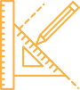
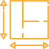
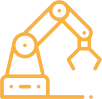

О нашей компании

Проектирование узлов судовых устройств и систем требующих замены/ремонта или модернизации присудоремонте (в т.ч. фундаменты, связи, передачи и т.д.)
- Разработка инструкций по эксплуатации
- Согласование проекта с классификационным обществом
- Разработка ПОР на монтаж и установку
Проектирование технологической оснастки (эстакады, рампы, рольганги) для оснащения вспомогательных/подсобных производств с учетом требований технического регламента безопасности машин
- Оформление, при необходимости, разрешительных документов и инструкций по эксплуатации
- Разработка, при необходимости, ПОР на монтаж и установку технологической оснастки
- Разработка ведомостей материалов и калькуляции предварительных затрат
- Разработка ведомости материалов
Проектирование тары, фундаментов, опор (деревянной, металлической, картонной) для транспортировки (в т.ч. крупногабаритных и тяжеловесных) узлов и изделий всеми видами транспорта с учетом правил международной перевозки грузов (Гаагские правила, правила Висби и т.д.)
- Оформление, при необходимости, разрешительных документов и инструкций по эксплуатации
- Разработка, при необходимости, ПОР на монтаж и установку технологической оснастки
- Разработка ведомостей материалов и калькуляции предварительных затрат
- Разработка ведомости материалов

Проектирование технологической оснастки (эстакады, рампы, рольганги) для оснащения вспомогательных/подсобных производств с учетом требований технического регламента безопасности машин
- Оформление, при необходимости, разрешительных документов и инструкций по эксплуатации
- Разработка, при необходимости, ПОР на монтаж и установку технологической оснастки
- Разработка ведомостей материалов и калькуляции предварительных затрат
- Разработка ведомости материалов
Организация производственных участков
Организация новых производств судостроительного и машиностроительного профиля
- Согласование с Заказчиком технического задания на разработку, привязка объекта к месту
- Разработка планировок с экспликациями и техпроцессов (принципиальных и рабочих) под имеемое у Заказчика технологическое оборудование
- Согласование планировок и техпроцесса с классификационнымиобществами и разрешительными органами (при необходимости)
- Расчет проектных норм расхода материалов и энергии
- Составление ведомости материалов на запуск производства
- Расчет проектной себестоимости продукции
- Идентификация объектов повышенной опасности (в т.ч. разработка декларации)
- Определение категорий пожаро-взрывоопасности объекта согласно НАПБ Б.03.002-2007
Оптимизация действующих производств
- Технико-экономическое обоснование, с расчетом пропускной способности производственного участка и разработкой мер по ликвидации «узких» мест
- Расчет проектной себестоимости продукции
- Идентификация объектов повышенной опасности (разработка декларации)
- Определение категорий пожаро-взрывоопасности объекта согласно НАПБ Б.03.002-2007
- Инжиниринговое сопровождение аттестации рабочих мест по условиям труда машиностроительного, судостроительного производства с согласованием пакета документов в госструктурах, и передачей Заказчику

Проектирование технологической оснастки (эстакады, рампы, рольганги) для оснащения вспомогательных/подсобных производств с учетом требований технического регламента безопасности машин
- Оформление, при необходимости, разрешительных документов и инструкций по эксплуатации
- Разработка, при необходимости, ПОР на монтаж и установку технологической оснастки
- Разработка ведомостей материалов и калькуляции предварительных затрат
- Разработка ведомости материалов